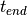
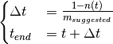

sleep module¶
This module contains information about the activity dealing with sleeping. This class is activity.Activity that gives a person.Person the ability to eat and satisfy the need rest.Rest.
This file contains class sleep.Sleep.
Module author: Dr. Namdi Brandon
-
class
sleep.Sleep[source]¶ Bases:
activity.ActivityThis class is responsible for the act of sleeping, which satisfies the need
rest.Rest.-
advertise(p)[source]¶ This function calculates the score of an activity advertisement to a Person
Parameters: p (person.Person) – the person being advertised to Returns: the value of the advertisement Return type: float
-
end(p)[source]¶ This handles the end of the sleep activity.
Parameters: p (person.Person) – the person of interest Returns: None
-
end_sleep(p)[source]¶ This function addresses logistics with a person waking up from sleep
- free the asset from use
- set the state of the person to idle (
state.IDLE) - update the satiation
- update the start time and end time
- set the decay rate
- update the schedule for the rest need
Parameters: p (person.Person) – the person of interest Returns: None
-
is_workday(p)[source]¶ This function indicates whether or not the sleep event resembles that from a person sleeping for a workday.
Parameters: p (person.Person) – the person of interest Returns: True, if the sleep event resembles a workday. False, otherwise.
-
set_end_time(p)[source]¶ This function returns the end time of sleeping
The end time  is set as follows

- where
 is the duration of sleep
is the duration of sleep is the suggested recharge rate
is the suggested recharge rate is the magnitude of sleep at time t
is the magnitude of sleep at time t
Parameters: p (person.Person) – the person of interest Return t_end: the end time of the sleep event [minutes, universal time] Return type: int
-
start(p)[source]¶ This handles the start of the sleep activity.
Parameters: p (person.Person) – the person of interest Returns: None
-
start_sleep(p)[source]¶ This handles what happens when a Person goes to sleep.
- The asset’s status is updated.
- The Person’s state is set to the sleep state (
state.SLEEP) - The end time is calculated
- The recharge rate is set (according to whether or not it is a workday / non-workday)
Parameters: p (person.Person) – the person of interest Returns: None
-